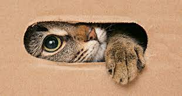

El perro, llamado perro doméstico y en algunos lugares coloquialmente llamado chucho,tuso,choco,entre otros; es un mamífero carnívoro de la familia de los cánidos, que constituye una especie del género Canis.
Los perro en particularmente me parecen el animal más encantador que hay, te da alegría y son muy bonitos. Hay una amplia gama de razas unos más bonitos otros más agrsivos y otro más tranquilos
Yo tengo un chiguagua y la verdad es bastante cariñoso y tranquilo. No es que sea muy hermoso pero yo me conformo es lo único qu me quiere y por eso me sirve.

|

|

|
|